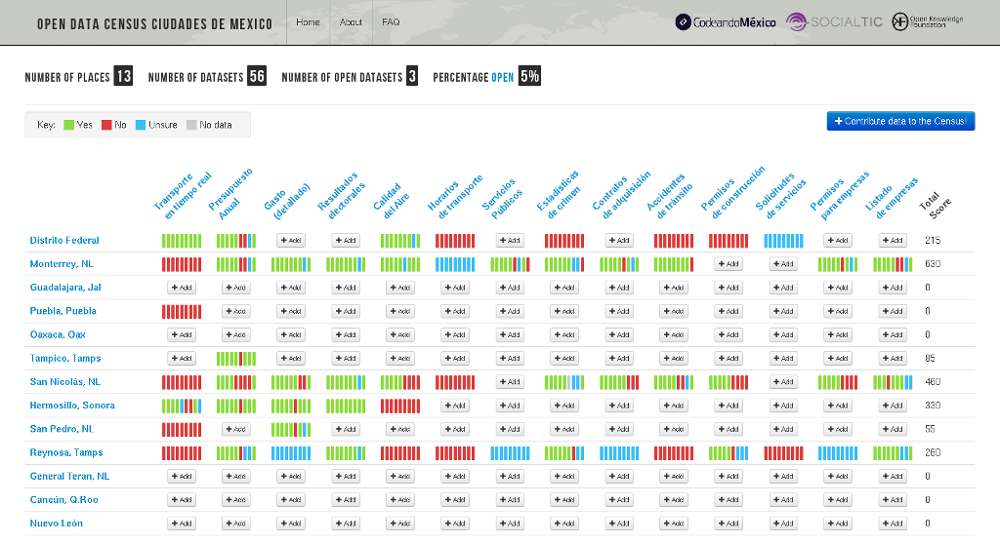

No cabe duda que estamos en la época dorada de la información. Nunca antes, la mayor parte de la humanidad había tenido en sus manos tantos documentos, audios, videos, etc. Sean lejanos o cercanos; con un tiempo de solicitud y llegada de pocos segundos (desde que escribimos y damos ENTER en un dispositivo conectado al Internet); además, comparado a otros tiempos, con un costo muy bajo. La red de redes es un cambio tan trascendental como la revolución industrial de principios del siglo pasado.
Siempre que se comparte el conocimiento, le brindas una útil herramienta a todos
En esta revolución del conocimiento común tenemos dos complementos: el tecnológico formado por todos las computadoras, fibras ópticas, redes celulares, teléfonos inteligentes y muchos más que construyen una gran infraestructura de telecomunicaciones. El otro complemento, es el conjunto de principios éticos, morales y de transparencia que motivan a las personas, empresas, instituciones y gobiernos a liberar su información a la red, al ciudadano.
Cabe recordar y admirar que fue hace 25 años cuando Sir Tim Berners-Lee desarrolló los conceptos de las páginas web y puso en operación el primer servidor web en el CERN. Él mismo defendió que sus ideas fueran de uso libre, sin patentes; para que rápidamente fueran usadas por la comunidad científica y compartieran sus conocimientos, en un inicio, y luego para toda la humanidad fundando el W3C.
Con la parte tecnológica resuelta, ha sido común que cualquiera de nosotros se pregunte... ¿Cómo se podrían mejorar los servicios gubernamentales? La respuesta es Datos Abiertos.
¿Qué son los Datos Abiertos?
Datos Abiertos es en esencia una "Definición de Apertura":
Los datos abiertos son datos que pueden ser utilizados, reutilizados y redistribuidos libremente por cualquier persona y que se encuentran sujetos, cuando más, al requerimiento de atribución y de compartirse de la misma manera en que aparecen.
Las características más importantes que deben tener los datos abiertos son:
- Disponibilidad y acceso: la información debe estar disponible como un todo y a un costo razonable, de preferencia que se pueda descargar de internet. Además debe estar en un formato conveniente y modificable. Por ejemplo, como archivos CSV que podemos importar a cualquier hoja de cálculo.
- Reutilización y redistribución: los datos deben ser provistos bajo términos que permitan reutilizarlos y redistribuirlos, e incluso integrarlos con otros conjuntos de datos, simpre con fines legales. Por ejemplo, que podamos estudiar los datos sobre accidentes de tránsito y buscar los cruceros más riesgozos o las épocas del año con mayor cantidad de los mismos.
- Participación universal: todos deben de poder utilizar, reutilizar y redistribuir la información. No debe haber discriminación alguna en términos de esfuerzo, personas o grupos. Por ejemplo, que se permita el uso de la información de las rutas de transporte público para la promoción de turismo, sin costo alguno.
Los datos que el gobierno debería compartir
El International Open Data Census fue creado por la Open Knowledge Foundation en 2012 y provee una medida clara de los datos abiertos; hace el siguiente Listado de Conjunto de Datos:
| Conjunto de datos | Descripción |
|---|---|
| Transporte en tiempo real | Información en tiempo real* sobre sistemas principales de gobierno o concesionados (camiones, metro, trenes, tranvías, etc.). |
| Presupuesto Anual | Presupuesto municipal en un nivel alto. Por ejemplo gastos por sector, por dependencia, etc. Esta categoría es para presupuestos que son planes de gasto (no gastos reales en el pasado). |
| Gasto (detallado) | Registros de gastos reales (pasados) a nivel de transacciones. Por ejemplo, el gasto mes con mes de temas específicos a un nivel de granulación amplio. |
| Resultados Electorales | Resultados por localidad/sitio de contiendas electorales en el municipio. |
| Calidad del Aire | Datos sobre calidad del aire. Por ejemplo los niveles de contaminantes mayores a nivel granular; por lo menos mes a mes, preferible día a día y con división geográfica. |
| Horarios de Transporte | Horarios de todos los sistemas operados por gobierno o consecionados (camiones, metro, trenes, tranvías, etc.). Ubicaciones de las paradas como datos georreferenciados. |
| Servicios Públicos | Ubicación de varios servicios públicos como escuelas, parques, hospitales, guarderías, etc. |
| Estadísticas de Crimen | Datos sobre crimen a nivel municipal. Preferiblemente a un grado razonablemente desagregado; lo mejor sería con fecha exacta (fecha-hora) y ubicación; es aceptable por día y calle o código postal. |
| Contratos de Adquisición | Información por contrato sobre contratos municipales. Incluyendo monto, ganador (nombre y dirección), etc. |
| Accidentes de Tránsito | Estadísticas sobre accidentes de tránsito incluyendo hora y ubicación. |
| Permisos de Construcción | Datos de los permisos de construcción otorgados por el municipio. |
| Solicitudes de Servicios | Solicitudes que no son de emergencia a las autoridades municipales. Por ejemplo, baches, grafiti, luminarias, etc. Deben ser granulares, a nivel de solicitud. |
| Permisos para Empresas | Permisos para empresas. Licencias de funcionamiento. |
| Listado de Empresas | Información clave sobre las empresas en el área municipal. Tal como nombre, dirección, información de contacto y tipo de negocio. |
* Información en tiempo real quiere decir cosas como ubicación exacta de los servicios (dónde están los camiones o los trenes, etc.).
Conozca a quienes promueven los datos abiertos
- A nivel internacional Open Knowledge es una organización sin ánimo de lucro que promueve la apertura de datos con recursos tecnológicos.
- El Gobierno Federal tiene el sitio datos.gob.mx y está en proceso la iniciativa de ley “Datos Abiertos” que regulará a todos los niveles del gobierno para que vayan liberando sus datos.
- El sitio datamx.io es elaborado por Codeando México donde activistas informáticos mexicanos trabajan en diferentes proyectos sobre Datos Abiertos. Entre éstos está un sistema para la recopilación, validación y descarga de datos abiertos de los municipios de México. Vea la siguiente imagen.
Imagen del Open Data Census de las Ciudades de México al 2 de noviembre de 2014
El IMPLAN Torreón está trabajando en la apertura de datos
En mayo de 2014 se lanzó el Sistema Metropolitano de Indicadores donde se concentra información de interés de los municipios de Torreón, Gómez Palacio, Lerdo y Matamoros.
Se está construyendo la segunda versión del sitio web del IMPLAN donde se integra el Sistema Metropolitano de Indicadores y el Sistema de Información Geográfica. El objetivo es ofrecer una misma plataforma donde los datos, los mapas y los análisis se encuentren debidamente organizados.
Hay contacto frecuente con los funcionarios de los municipios de la Zona Metropolitana de La Laguna. En las agendas de trabajo se tiene como prioridad la cooperación mutua para hacer llegar al ciudadano la información que necesita; y el ofrecimiento del staff del IMPLAN para su apoyo.